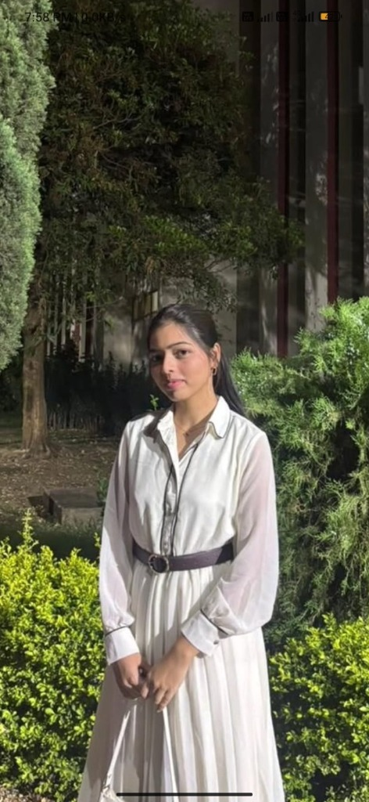
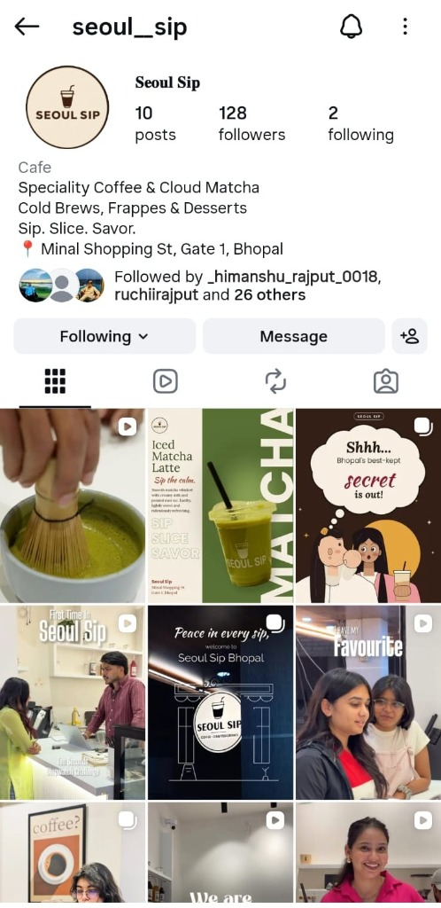
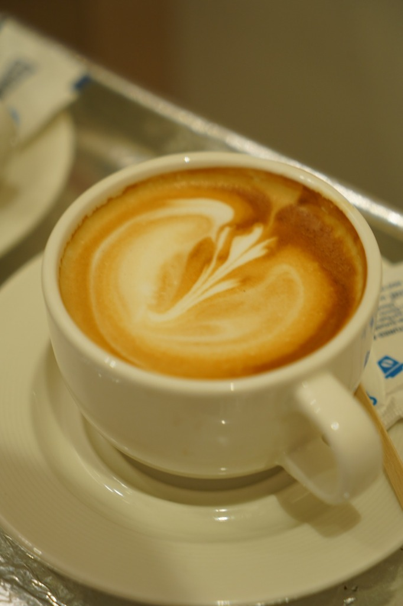
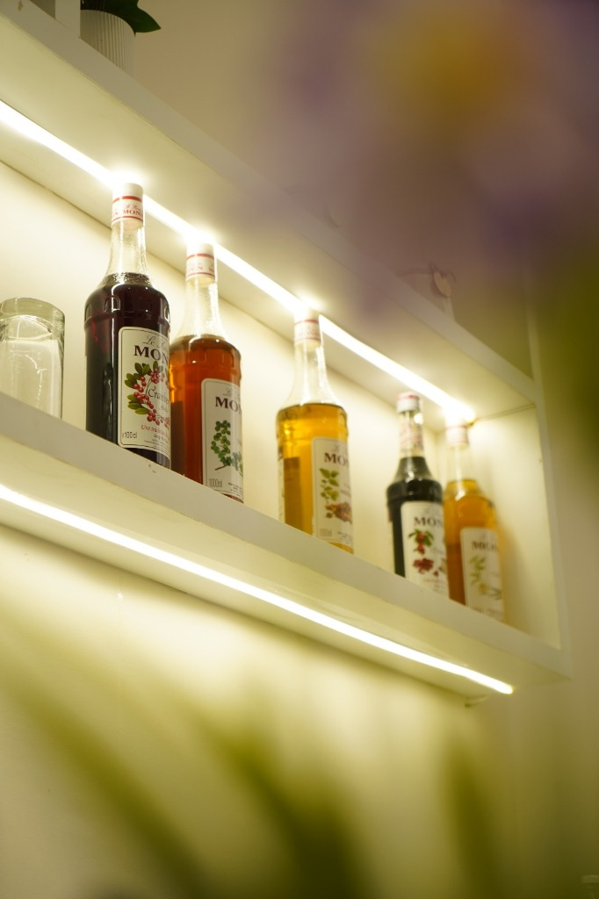

SOCIAL MEDIA✳
& Content SpecialistCreative ideas. Clear communication. Meaningful digital experiences.
"I'm a Computer Science and Data Science student exploring the intersection of content, brand communication, and digital experiences. I currently contribute to Seoul Sip's social media activities, where I participate in content ideation, promotional brainstorming, and community engagement."

Social Media Management team member contributing to daily ideation, story flow, and aesthetic beverage storytelling.
Translating brand personality into approachable short-form content, engaging captions, and audience-first hooks.
3rd-Year B.Tech Computer Science & Data Science with a creative focus on digital brand communication.
WHO I AM
"Finding the authentic heartbeat of a brand, and turning everyday moments into content that resonates."
I am a third-year B.Tech Computer Science and Data Science student with an active, genuine passion for brand communication, content planning, and social media strategy. While my academic studies give me analytical discipline and a structured mindset, my creative energy is dedicated to exploring how brands build meaningful relationships through visual and verbal storytelling.
I am currently part of Seoul Sip's Social Media Management team, where I collaborate on promotional brainstorming, content ideation, and community interaction. Working with an emerging speciality coffee and cloud matcha brand has reinforced my appreciation for subtle details: how lighting sets the mood, how an intentional caption sparks conversation, and how consistency transforms casual followers into loyal regulars.
I enjoy exploring fresh creative directions and finding ways to communicate a brand's unique personality through digital media. My goal is to grow further in Content & Communication and Social Media Management, bringing fresh perspective, audience empathy, and dedicated execution to forward-thinking brands.
Pursuing B.Tech in Computer Science and Data Science (3rd Year). This technical foundation informs my logical approach to content workflows, data-conscious audience analysis, and platform organization—applied entirely toward creative communication.
SKILLS & AREAS OF EXPERIENCE
Relevant skills and areas of practical experience developed through active team collaboration, content planning, and creative execution:
- Content Ideation Concept • Brainstorming
- Content Planning Calendars • Cadence
- Social Media Management Platform • Execution
- Brand Communication Voice • Narrative
- Community Engagement Stories • Interaction
- Promotional Concepts Launches • Seasonal
- Audience Awareness Tone • User Behavior
- Creative Thinking Aesthetic • Angle
- Content Coordination Team • Workflow
- Caption Writing & Storytelling Microcopy • Hooks
CONTENT IDEATION & BRAINSTORMING
Actively participating in brainstorming sessions to develop creative angles around key menu items—specifically highlighting the craft behind Cloud Matcha whisking, specialty pour-overs, and cozy evening cafe vibes.
PROMOTIONAL HOOKS & LOCAL AWARENESS
Contributing to narrative campaigns like "Shhh... Bhopal's best-kept secret is out!" and framing Seoul Sip as the primary tranquil haven for college students and remote creatives in Bhopal.
STORY PLANNING & COMMUNITY TOUCHPOINTS
Planning interactive story formats (polls, drink recommendation quizzes, behind-the-barista glimpses) to encourage direct audience replies and build an engaged neighborhood community.
CAPTION WRITING & BRAND TONE
Drafting conversational, warm microcopy that complements the visual calmness of the brand—balancing sensory taste descriptors with welcoming community invitations.

Curated Feed Architecture (@seoul__sip): Strategic content mix featuring ceremonial bamboo whisking reels, 'Iced Matcha Latte — Sip the calm' launch graphics, 'Shhh... Bhopal's best-kept secret is out!' story hooks, 'Peace in every sip' ambient neon reels, and interactive customer stopwatch challenges.


MY WORK INCLUDES
Core disciplines across social media management, creative planning, and audience engagement.
AESTHETIC PHOTOGRAPHY & STYLING
Framing everyday beverage craft into aspirational, appetizing visuals. Emphasizing clean angles, texture, warmth, and brand consistency that make a viewer stop mid-scroll.
REEL & VIDEO STORYBOARDING
Conceptualizing short-form video sequences that balance calm aesthetics with high retention. Designing smooth cuts between preparation, ice pours, and cozy ambiance.
CONTENT PLANNING & CADENCE
Developing balanced monthly content calendars so the brand never posts randomly. Structuring the feed across product highlights, educational snippets, and neighborhood culture.
STORYTELLING & CAPTION WRITING
Drafting captions that feel like a conversation with a friend rather than a corporate billboard. Clear, evocative, and tailored to evoke craving and emotional connection.
COMMUNITY TOUCHPOINTS
Transforming social channels into two-way conversations. Structuring engaging story stickers, responding to beverage inquiries, and celebrating user-tagged content.
PROMOTIONAL CAMPAIGN IDEATION
Developing themed concepts that connect social media impressions with real cafe visits—such as weekend tastings, student study sanctuary promotions, and hidden specials.
CONTENT CONCEPTS
Proactive campaign frameworks designed to build anticipation, strengthen brand affinity, and drive real-world engagement.
THE CLOUD MATCHA RITUAL
STUDY, SIP & SAVOR
SECRET MENU SUNDAYS
LET'S CREATE & CONNECT.
Open for opportunities in Content & Communication, Social Media Management, Content Planning, and Creative Brand Storytelling. Let's discuss how we can bring fresh ideas and genuine audience connection to your brand.